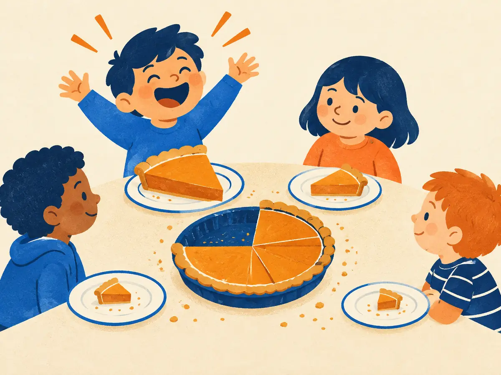

Softmax
Every time an LLM picks its next token, its last step is a softmax. It turns a list of raw scores into probabilities that are positive and add up to exactly 1. Attention uses the same function to turn scores into weights. Two lines of math, and a few traps worth knowing.
By the end you can
- Compute a softmax by hand, including the stable "subtract the max" version.
- Explain why adding a constant to every logit changes nothing, and what temperature does.
- Connect softmax to the cross-entropy training loss and its simple gradient, $p - y$.
Take a guess. You'll be able to check it in a minute.
Softmax turns scores $[2, 1]$ into probabilities of about $[0.73, 0.27]$. What does it give for $[102, 101]$?
- About $[1.00, 0.00]$, because the numbers are huge
- About $[0.50, 0.50]$, because 102 and 101 are nearly equal
- Exactly the same, $[0.73, 0.27]$
- It can't be computed
A chatbot's "temperature" setting is lowered from 1 to 0.2. Its answers become…
- more predictable: it almost always picks its top choice
- more random and creative
- shorter
- no different; temperature only affects speed
Scores are not probabilities
An LLM's final layer outputs one number per entry in its vocabulary: 50,257 numbers for GPT-2, 128,256 for Llama 3. These are logits: raw, unbounded scores where higher means "more likely next". But they can be negative and don't add up to anything in particular, so we can't sample from them directly. We need a function that makes every value positive, makes them sum to 1, and keeps the order (a higher score should still mean a higher probability). Softmax does all three:
$$\mathrm{softmax}(z)_i = \frac{e^{z_i}}{\sum_{j=1}^{V} e^{z_j}}$$$z$ is the vector of logits, $z_i$ the logit of token $i$, and $V$ the vocabulary size. The exponential $e^{z_i}$ makes each value positive (and turns differences in score into ratios of probability). Dividing by the sum over all $V$ tokens, the normaliser, makes them add up to 1.
The name says what it is: a soft version of "argmax". A hard argmax would put probability 1 on the top token and 0 everywhere else. Softmax leans toward the top token, but keeps some probability for the rest, and it is smooth, so gradients can flow through it.
Explain like I'm 5

Four kids share one pie. Each one cheers for it, and the pie is cut according to how loud they cheer.
The loudest cheerer gets the biggest slice, and a little extra loudness wins a lot more pie. A quiet kid still gets a small slice, never a negative one. And however loud or quiet the whole group is, the whole pie gets shared out, no more and no less.
Where it breaks: logits can be negative, which a cheer can't. Only how much louder one kid is than the others matters, not how loud they all are.
Only the differences matter
Add the same constant $c$ to every logit:
$$\frac{e^{z_i + c}}{\sum_j e^{z_j + c}} = \frac{e^{c}\,e^{z_i}}{e^{c}\sum_j e^{z_j}} = \frac{e^{z_i}}{\sum_j e^{z_j}}$$The $e^c$ cancels, so the output is identical. Softmax only sees how far apart the logits are, never their absolute level.
That property is a lifesaver in code. In 32-bit floats, $e^{z}$ overflows to infinity once $z$ passes about 88.7; in 16-bit floats (fp16), already at about 11.1. Logits of that size are routine. So every real implementation subtracts the largest logit first:
$$\mathrm{softmax}(z) = \mathrm{softmax}(z - \max_j z_j)$$Now the biggest exponent is $e^0 = 1$ and nothing can overflow. The same trick, called log-sum-exp, computes $\log \mathrm{softmax}$ stably, which is why frameworks such as PyTorch take raw logits in their cross-entropy loss instead of probabilities.
Worked example
Logits $z = [2,\ 1,\ 0]$.
- Exponentiate: $e^2 \approx 7.389$, $e^1 \approx 2.718$, $e^0 = 1$
- Sum: $7.389 + 2.718 + 1 = 11.107$
- Divide: $[7.389,\ 2.718,\ 1] / 11.107 \approx [0.665,\ 0.245,\ 0.090]$, which sums to 1 ✓
Logits $z = [3,\ 1,\ 1]$. Use the stable recipe.
- Subtract the max. The shifted logit of token 2 is
- $e^{-2} \approx$
- Probability of token 1, $1 / (1 + 2 \times 0.135) \approx$
- If token 1 is the correct next token, the cross-entropy loss $-\ln p_1 \approx$
Temperature: a preview
Divide the logits by a positive number $T$, the temperature, before the softmax:
$$p_i = \frac{e^{z_i / T}}{\sum_j e^{z_j / T}}$$- $T = 1$: the model's own distribution.
- $T < 1$: gaps grow, the distribution gets sharper. As $T \to 0$ it approaches a one-hot on the top token (greedy decoding). For $z = [2, 1, 0]$, $T = 0.5$ gives $[0.87,\ 0.12,\ 0.02]$.
- $T > 1$: gaps shrink, the distribution gets flatter. As $T \to \infty$ it approaches uniform. $T = 2$ gives $[0.51,\ 0.31,\ 0.19]$.
Temperature never changes the order of the tokens, only how strongly the top one is preferred. You'll use it, along with top-k and top-p, when we look at sampling in KV cache & sampling.
Playground: logits in, probabilities out
Drag the logits and the temperature. Then press "Add 1 to every logit" and watch nothing happen.
Softmax meets cross-entropy
During training, the correct next token is known. The loss is the cross-entropy from P1.6: minus the log of the probability the model gave to the right answer.
$$\mathcal{L} = -\log p_{\text{target}}$$In the animation, if the true next word was "mat" ($p = 0.73$), the loss is $-\ln 0.73 \approx 0.32$. If it was "floor" ($p \approx 0.16$), the loss is about $1.8$: a bigger surprise costs more.
Softmax and cross-entropy fit together beautifully. The gradient of the loss with respect to each logit is just
$$\frac{\partial \mathcal{L}}{\partial z_i} = p_i - y_i$$where $y$ is the one-hot vector of the true token (1 for the target, 0 elsewhere). So with target "floor", the gradient is $[0.73,\ 0.16 - 1,\ 0.10,\ 0.01] = [0.73,\ -0.84,\ 0.10,\ 0.01]$. Gradient descent (P2.2) subtracts it, which pushes the "floor" logit up and every other logit down, each in proportion to how much probability it wrongly took.
A two-way softmax is the familiar sigmoid: $\mathrm{softmax}([z, 0])_1 = \frac{e^z}{e^z + 1} = \frac{1}{1 + e^{-z}} = \sigma(z)$.
Explain to a friend what softmax does, and why code subtracts the largest logit first.
Which logit vector gives the same softmax output as $[1, 2, 3]$?
- $[2, 4, 6]$
- $[-2, -1, 0]$
- $[3, 2, 1]$
- $[0.1, 0.2, 0.3]$
Why do implementations compute $\mathrm{softmax}(z - \max z)$?
- It makes the probabilities sharper
- It makes them sum to 1
- It makes training converge faster
- It gives the identical result while keeping $e^z \le 1$, so large logits can't overflow
As the temperature $T$ goes toward 0, softmax$(z/T)$ approaches…
- a one-hot vector on the largest logit
- the uniform distribution
- the raw logits
- all zeros
With softmax followed by cross-entropy loss (P1.6), the gradient of the loss with respect to logit $z_i$ is…
- $-\log p_i$
- $p_i(1 - p_i)$
- $p_i - y_i$, where $y$ is the one-hot target
- always zero for the correct token
Key takeaways
- $\mathrm{softmax}(z)_i = e^{z_i} / \sum_j e^{z_j}$: positive outputs that sum to 1, with the order kept.
- Only differences between logits matter. Subtract the max before exponentiating to avoid overflow.
- Temperature divides the logits: $T < 1$ sharpens, $T > 1$ flattens, $T \to 0$ is greedy.
- Training uses $-\log p_{\text{target}}$, whose gradient with respect to the logits is simply $p - y$.
Add this lesson's cards to your spaced-review deck.